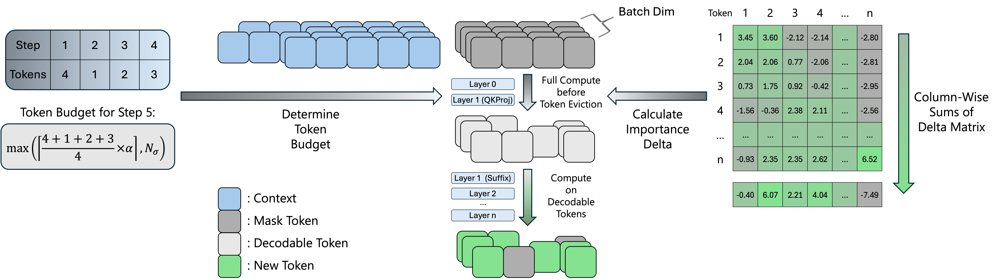

FOCUS: DLLMs Know How to Tame Their Compute Bound
DLLMs Know How to Tame Their Compute Bound
Diffusion LLMs process a full token block at every denoising step, but only around 10% of tokens are decoded. FOCUS predicts decodable tokens from early-layer importance deltas, evicts non-decodable tokens on the fly, and turns the saved FLOPs into higher throughput.
Replay Demo
0ms
Playing
Prompt
LMDeploy
Overview

FOCUS estimates token importance after the early Q/K projections, keeps likely decodable candidates under an adaptive budget, and removes the rest from later-layer computation.
Motivation
Block-diffusion decoding keeps exact KV caching and parallel decoding, but repeats full-block computation at every step even though only a small subset of tokens decode.
Decodability Signal
The Layer 0-to-1 importance delta separates decodable from non-decodable tokens, giving FOCUS an early signal before the expensive later layers.
Runtime Action
FOCUS uses dynamic budgeting, token eviction, ragged execution, and intra-block KV caching to spend computation on likely decodable tokens.
Efficiency
Hover over each batch group to inspect throughput.
On a single NVIDIA A100-SXM4-80GB GPU, FOCUS reaches up to 2.32x throughput over the LMDeploy baseline by reducing redundant block computation as batch size grows. The paper also reports up to 3.52x speedup at block size B=64 on ShareGPT with SDAR, where the larger diffusion block makes the compute bottleneck more pronounced.
Quality
| Conf. | Method | alpha | GSM8K | Math500 | HumanEval | MBPP | IFEval | Avg. |
|---|---|---|---|---|---|---|---|---|
| 0.9 | Baseline | - | 89.20 | 64.70 | 69.82 | 56.81 | 57.45 | 67.60 |
| 0.9 | FOCUS | 1.2 | 89.84 | 64.60 | 72.56 | 58.17 | 60.97 | 69.23 |
| 0.9 | FOCUS | 1.5 | 90.15 | 64.30 | 69.51 | 61.09 | 60.87 | 69.18 |
| 0.9 | FOCUS | 1.8 | 90.75 | 63.80 | 71.34 | 58.95 | 60.11 | 68.99 |
| 0.8 | Baseline | - | 87.57 | 59.30 | 65.85 | 50.78 | 58.69 | 64.44 |
| 0.8 | FOCUS | 1.2 | 90.33 | 64.10 | 67.68 | 58.56 | 59.91 | 68.12 |
| 0.8 | FOCUS | 1.5 | 89.73 | 62.20 | 69.21 | 59.73 | 60.97 | 68.37 |
| 0.8 | FOCUS | 1.8 | 89.39 | 62.10 | 69.82 | 56.81 | 61.14 | 67.85 |
| 0.7 | Baseline | - | 84.65 | 54.60 | 59.76 | 50.58 | 58.47 | 61.61 |
| 0.7 | FOCUS | 1.2 | 89.24 | 62.00 | 68.29 | 56.81 | 61.91 | 67.65 |
| 0.7 | FOCUS | 1.5 | 89.31 | 62.20 | 64.33 | 55.25 | 62.26 | 66.67 |
| 0.7 | FOCUS | 1.8 | 88.03 | 59.80 | 64.33 | 53.89 | 60.08 | 65.23 |
On SDAR, FOCUS improves the five-task average across confidence thresholds, including the default Conf=0.8, alpha=1.5 setting.
Source: paper Table “Generation Quality across Thresholds and alpha on SDAR”.
Citation
@article{liang2026focus,
title = {FOCUS: DLLMs Know How to Tame Their Compute Bound},
author = {Kaihua Liang and Xin Tan and An Zhong and Hong Xu and Marco Canini},
journal = {arXiv preprint arXiv:2601.23278},
year = {2026},
url = {https://arxiv.org/abs/2601.23278}
}